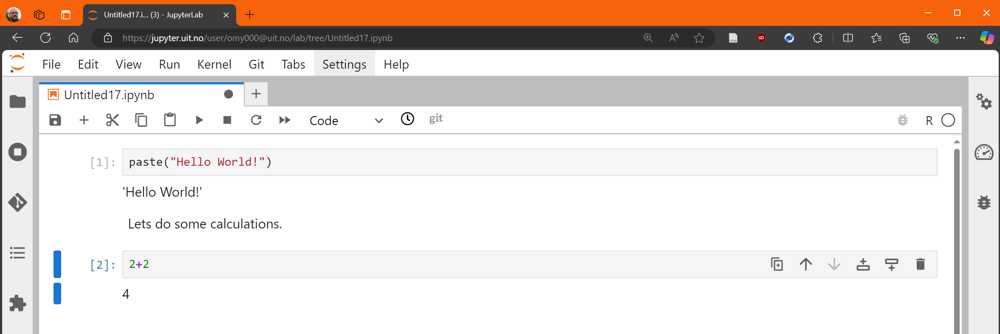

My Teaching Philosophy
Evolving Education in Econometrics and Data Science
About Myself and My Educational Journey
My name is Øystein Myrland, from Andenes in Nordland. I am a professor (since 2007) of Economics at The School of Business and Economics. My long-term relationship with UiT The Arctic University of Norway dates back to my enrollment as a student in 1986. During my studies, I was introduced to teaching during study groups, where I often ended up lecturing my fellow students—a role I found both stimulating and very engaging. This early experience sparked my passion for teaching, a commitment that has only deepened over the years. Most of this document is written in English because the majority of my current and historical classes, mainly at the master’s and PhD level, have been taught in English, largely because they are part of the Erasmus program. Additionally, all my research is conducted and published in English. Only recently have I begun teaching in Norwegian at the bachelor’s level, marking an interesting shift in my teaching journey from teaching advanced topics to guiding students through foundational concepts.
I began my formal teaching career during my PhD project in 1996, with a strong emphasis on quantitative courses. Early on, I taught econometrics and market analysis courses using proprietary software like Shazam (Byron 1987), SPSS (Hilbe 2003, 2004, 2005), and Stata (Gutierrez 2010) for the traditionally required empirical “data labs” (Kaplan 2018). Recognizing the growing potential of open-source tools, I started using R in 20071 (R Core Team 2024) and fully integrated it into my quantitative courses by 2015. This transition was driven by my belief in equipping students with accessible, practical tools that bridge theory and application (see Section 1).
Throughout my teaching journey, I noticed a recurring challenge: students often focused solely on exam-related content, neglecting the practical application of statistical software and coding skills. This gap became evident when supervising master’s students who excelled in theoretical exams but lacked hands-on experience during their thesis work. The introduction of the WISEflow digital assessment platform in 2017 provided a practical opportunity to address this gap (see Section 5). By incorporating practical coding tasks into exams, I ensured that students developed not only theoretical knowledge but also the applied skills essential for real-world problem-solving.
Over the years, I have supervised more than 50 master’s students and 11 PhD students, all of whom have successfully completed their degrees. Currently, I am supervising one PhD candidate, and one candidate has recently submitted his thesis. My formal educational training includes the “Universitetspedagogisk seminar” (UPS) at UiT in 2002 and “Forskningsveiledning” at UiT Result in 2021, both of which have significantly influenced my teaching and supervisory approach. I was enrolled in the 2024/25 class of the ‘Research Group Leader Development Program’ at Helsefak UiT, and the training has been directly relevant to my current role as Head of Research at the Business School—particularly in supporting research strategy, leadership, and collaboration.
How this portfolio is structured
This portfolio documents my teaching competence along the four required criteria for merited educator status at UiT. (1) Focus on student learning is documented throughout the portfolio and in each appendix, showing how I systematically design learning activities and assessment forms to support student learning outcomes. (2) Scientific approach is demonstrated through my grounding in constructive alignment (Biggs and Tang 2011), the SOLO taxonomy, situated learning (Brown, Collins, and Duguid 1989), and dialogic learning (Dysthe 2001), consistently linking pedagogical theory to concrete teaching practices. (3) Systematic development over time is presented through a documented trajectory of teaching development from 1996 to 2026, with explicit feedback-change-effect cycles showing how observed learning barriers led to deliberate redesigns, validated through student and colleague feedback (see Section 9). (4) Collegiality is documented through co-teaching relationships, mentoring, open sharing of reusable teaching resources, collaborative programme development, and institutional infrastructure building.
Appendices/Sections
Section 1: Teaching Philosophy in Action – “BED-2056 Introduction to Data Science”
Section 2: Economics with Data Science – A New Educational Approach
Section 3: Introduction to Reproducible Research with “Bruttonasjonalprodukt – BNP”
Section 4: Online Coding Platform – “Jupyter at UiT”
Section 5: Online WISEflow Exam
Section 6: Automated Grade Explanation for All
Section 7: Partnering with Students for Continuous Improvement
Section 8: Supervision Philosophy and Practice
Section 9: Development Over Time – Evidence Log
Section 10: Letter of Recommendation from Department Head
Core Principles of Teaching
As a university professor specializing in quantitative analysis—econometrics, statistics, data science, and finance—my teaching philosophy is guided by a commitment to cultivating statistical thinking2 and fostering an analytical mindset in students (Racine and Hyndman 2002). I believe in creating an educational environment where students are not just passive recipients of knowledge but active participants in their learning journey (Smith 1998). This involves teaching as an investigative process of problem-solving and decision-making (see Section 3).
Statistics, as both a methodology and a field of study, is deeply embedded in historical, philosophical, and political contexts. Recognizing this cultural and historical foundation enriches the learning process, allowing students to appreciate how statistical methods evolved to meet the needs of science, governance, and society. This historical perspective also emphasizes the dual nature of statistics: as a descriptive tool for summarizing reality and as a mathematical discipline for making inferences from data. Moreover, teaching statistics critically includes addressing its philosophical underpinnings. Statistics bridges the certainty of mathematics with the uncertainty of empirical observations. It equips students to navigate complex phenomena by identifying patterns and relationships while acknowledging inherent limitations. Highlighting these aspects encourages students to view statistics as a reflective, rather than purely technical, discipline.
Through cooperative and interactive learning approaches, I aim to empower students with the skills to interpret and critically evaluate statistical information. This involves fostering mathematical literacy and numeracy, ensuring that students can engage with statistical representations in the media and everyday life. By embedding these practices in teaching, I seek to cultivate informed students who can actively participate in data-driven decision-making processes (see Section 2 and Section 7).
Systematic Development Over Time
A key dimension of my growth as an educator is that each significant pedagogical change has been triggered by an observed learning barrier, followed by a deliberate redesign, and then validated through feedback from students, colleagues, or institutional partners. This section presents my developmental trajectory explicitly, including reflections on what drove the changes and what I learned from them.
A documented trajectory of development (1996–2026)
| Period | Teaching challenge observed | Change implemented | Evidence / artifacts | What I learned (reflection) |
|---|---|---|---|---|
| 1996–2006 | Strong “talk and chalk” focus; students learned procedures but struggled with application | Gradual shift to applied examples and guided problem-solving | Course notes; supervision patterns | Students need repeated opportunities to use methods, not only reproduce them |
| 2007–2014 | Proprietary software created access barriers and limited reproducibility | Introduced R (2007) and expanded open workflows | Syllabi, lab instructions | Open tools reduce friction and support long-term skill retention |
| 2010–2017 | Students prioritized exam theory; weak practical coding competence | Fully integrated R into quantitative courses; redesigned labs for coding competence | BED-2056 design; lab materials | Constructive alignment must include assessment of practical skills |
| 2017–2020 | Need to assess applied competence fairly at scale | Implemented WISEflow practical coding exams; structured feedback routines | WISEflow exam design; grading automation (see Section 5, Section 6) | Practical exams create stronger alignment and improve learning behaviors |
| 2020–2024 | Program-level need: economists with data-science capability | Co-developed “Economics with Data Science” (BSc 2021; MSc 2024) with colleagues | Program documentation; course portfolio (see Section 2) | Sustainable change requires collegial co-design and shared infrastructure |
| 2022–2026 | New learning environment with LLMs and coding copilots | Integrated responsible use of LLM tools; shifted emphasis to validation and critical coding | Course guidelines; assignments | Students must learn verification and epistemic humility, not only tool usage |
Reflection: Across these phases, my development has been systematic in the sense that each pedagogical change was triggered by an observed learning barrier (student behavior, assessment incentives, access issues), followed by a deliberate redesign, and then validated through student feedback, colleague collaboration, and improved alignment between intended learning outcomes, learning activities, and assessment. The timeline also reflects a broadening of scope—from individual course improvements to programme-level redesign and institutional infrastructure (Jupyter)—mirroring an increasing emphasis on collective development.
Mini-case 1: From misaligned assessment to WISEflow coding exams
Observed problem: Before 2017, econometrics exams tested primarily theoretical understanding. Student feedback and my own supervision experience revealed that many students deprioritized the practical coding labs because “it won’t be on the exam.” This misalignment meant students entered their thesis work with weak applied skills.
Pedagogical change: When UiT introduced WISEflow in 2017, I saw an opportunity to redesign assessment. I developed a two-part exam format: a closed theoretical section and an open-book practical coding section where students write and execute R code on real data. This required extensive experimentation with the platform, including testing code submission formats and designing “drag-and-drop” interpretation tasks (see Section 5).
Collegial dimension: I discussed the new exam design with colleagues teaching parallel courses, shared WISEflow templates, and presented the approach at a departmental meeting. Some colleagues subsequently adopted similar practical exam components in their own courses.
Result and reflection: The grade data for SOK-3020 shows a positive trend in the share of B and C grades among business students after 2017 (see the chart in Section 0.6.8). More importantly, I observed a qualitative shift: students began engaging with coding exercises earlier in the semester, knowing that practical competence would be assessed. A key lesson was that constructive alignment is not just about what we teach but what we assess—students allocate effort in response to assessment signals. A dilemma I continue to grapple with is how to balance the complexity of the coding tasks: too simple and the assessment becomes trivial; too complex and it disadvantages students who are strong theoretically but less experienced with programming. I address this through careful calibration of task difficulty and by providing practice exams.
Mini-case 2: From a single course to a programme redesign
Observed problem: The BED-2056 “Introduction to Data Science” course (2018–2021) was initially an elective with 16 students. Its rapid growth to 36 students by 2020 signaled strong unmet demand, but it also revealed a structural limitation: a single course could not adequately prepare economists for data-intensive work. Students reported that the skills learned in BED-2056 felt disconnected from other courses in the programme.
Pedagogical change: Together with my colleagues in the economics programme, I was one of the driving forces behind the redesign of the entire economics curriculum. This resulted in the “Economics with Data Science” bachelor programme (launched 2021) and the corresponding master programme (launched 2024). The key design principle was to embed programming and data analysis throughout the curriculum rather than isolating them in a single course (see Section 2).
Collegial dimension: The programme development required sustained collaboration among economics faculty, dialogue with industry representatives and alumni, and joint decisions about learning outcomes, assessment forms, and technical infrastructure. I had a leading role in designing the course progression, the digital portfolio system, and the standardized Content Management System (CMS) for course presentation. Crucially, this was not a solo effort—the programme represents genuine collegial co-creation, with colleagues contributing course designs, providing feedback, and co-teaching.
Result and reflection: The bachelor programme more than doubled applications in its first year and won the BFE faculty “Utdanningsprisen” (Teaching Award) in 2022. The deeper lesson, however, was that individual course innovation is necessary but insufficient: for students to develop coherent competence, the entire learning pathway must be aligned. A challenge I continue to reflect on is how to maintain programme coherence as individual courses evolve and as new colleagues join the teaching team. We address this through regular programme meetings and shared course templates.
Dilemmas and ongoing challenges
Throughout this process, I have reflected on several dilemmas and challenges. Three stand out. First, the balance between coding and economics: as we integrate more programming, I must ensure that economic theory does not become secondary. I address this by designing coding tasks that are always in service of economic analysis, never programming for its own sake. Second, there is the question of sustainability and scaling: the approaches I have developed (practical exams, automated feedback, digital portfolios) require significant upfront investment in infrastructure and course design. Ensuring that these systems remain maintainable as I share them with colleagues is an ongoing concern. Third, the responsible integration of LLM’s: since 2022, tools like chatGPT and GitHub Copilot have transformed the coding learning environment. The pedagogical challenge has shifted from “how do we teach students to code?” to “how do we teach students to critically evaluate code generated by AI?” I am still developing my approach here, and I view this as the most significant teaching challenge of the coming years.
A concrete example: the Cheese Case (SOK-3025, Fall 2025)
In a final master-level econometrics course before the thesis semester, I designed a term paper around a real pricing and promotion dataset for a U.S. cheese manufacturer. The case requires students to move from simple OLS estimation through panel data models (fixed effects, random effects, Mundlak) to profit-maximizing pricing and promotion evaluation—a progression that mirrors the complexity they will face in their thesis work.
Crucially, I allowed full use of LLMs throughout the exercise. This was a deliberate pedagogical choice: I wanted students to discover for themselves the boundary between tasks where LLMs excel and tasks where they fail without informed human guidance. Traditional, highly structured textbook exercises—“estimate an OLS model on this dataset”—are easily solved by any modern LLM. But the Cheese Case demands that students make sequential modeling decisions, interpret results in economic context, and justify choices that depend on understanding the data structure. Simply pasting my questions into a chatbot did not produce adequate answers.
The student reflections after the exercise confirmed exactly this pattern. Several students reported that LLMs worked well for simple, early tasks—loading data, running basic regressions, producing plots—but became increasingly unreliable as the analysis required more complex panel models and economic interpretation. One student noted: the effort shifted “from coding itself to critical evaluation and validation of the machine’s suggestions.” Another observed that “when I didn’t fully know what I was looking for, it was not a useful tool.” A recurring theme was the discovery that prompt quality depends entirely on the student’s own conceptual understanding: without knowing which model to request and why, even well-formulated prompts produced elegant but irrelevant output.
Several reflections also revealed a productive discomfort. Students described feeling that the work was “less mine” when heavily AI-assisted, and that the friction of debugging and re-prompting, while frustrating, generated deeper learning than a frictionless process would have. One student captured the core pedagogical insight precisely: “no matter how good AI is, you have to know what you are doing and verify the results afterwards.”
This experience has shaped my evolving approach to LLM integration. Rather than restricting AI use or ignoring it, I design tasks where the analytical judgment—choosing functional forms, recognizing panel structure, interpreting economic plausibility—cannot be outsourced. The LLM becomes a powerful assistant for implementation, but the student must remain the decision-maker. The Cheese Case demonstrated that this design works: students who engaged deeply with the econometric reasoning produced strong analyses regardless of which LLM they used, while those who relied on cut-and-paste prompting recognized their own knowledge gaps. Both outcomes are pedagogically valuable. I plan to develop more cases following this principle, where the complexity is in the thinking, not in the coding, and where LLM use is welcomed precisely because it makes visible who understands the underlying economics and who does not.
Collegiality: Building Teaching Capacity with Others
My approach to teaching is intentionally “open” and collaborative. I share materials, invite critique, co-design teaching solutions, and contribute to infrastructure that lowers barriers for both students and colleagues. In practice, my collegiality is expressed through (i) co-teaching and mentoring, (ii) sharing reusable teaching resources (“open education principles3”), and (iii) collaborative educational development projects.
Co-teaching, mentoring, and daily collegial support
Over many years, I have co-taught courses with colleagues at different points in time, including courses in econometrics, market analysis, finance, statistics and data science. In these collaborations, I have taken responsibility for developing shared course materials, assessment rubrics, and coding templates that my co-teachers could adopt and adapt. I actively contribute as a sounding board on teaching design, assessment, and quantitative methods—not only within my own department but also when colleagues from other programmes seek advice on integrating data analysis into their courses4. My mentoring role extends beyond formal supervision. I have mentored junior colleagues in course design and exam development, sharing practical templates and providing feedback on their teaching approaches.
Open teaching and sharing of reusable resources
I am a strong advocate of what I call “open teaching,” analogous to the open-source philosophy in software development. Concretely, this means that I routinely provide colleagues and students with reusable teaching materials, code templates, and reproducible course assets (e.g., Quarto documents, Git workflows, and standardized course pages). All course resources for the Economics with Data Science programmes are published on GitHub and remain accessible even after the course has ended (see, for example, the SOK-1004 course page: uit-sok-1004-h21.github.io). To support collegial reuse, I package course assets—templates, code, assignment scaffolds—in a way that colleagues can adopt directly, and I actively invite peer feedback to improve them over time. This reduces duplication of effort, enables quality improvement through peer reuse, and supports a culture of transparency and continuous refinement.
Collegial educational development at UiT
The co-development of the “Economics with Data Science” programmes required sustained collegial collaboration across the economics programme, with shared design work on learning outcomes, assessment forms, and technical infrastructure. I had one of the leading roles in this process, during programme meetings, drafting learning outcome descriptions, and designing the course progression. This was fundamentally a team effort: colleagues contributed their own expertise, challenged proposals, and co-created the final programme structure.
Similarly, the establishment of UiT-wide coding infrastructure (Jupyter) was achieved through close collaboration with the IT department, turning a local teaching need into a shared institutional resource. I also initiated and contributed to internal workshops on practical coding assessment and the use of WISEflow, sharing my experience so that colleagues could benefit from what I had learned through trial and error.
Dissemination beyond the local context
I have published a co-authored article on digital learning (Bertheussen and Myrland 2016) and have shared my teaching experiences through internal presentations and workshops at UiT. I recognize that there is a potential for more formal dissemination—through conferences on higher education and additional scholarly publications on teaching and learning. This is an area I plan to develop further (see the “Plans Ahead” section).
Core Principles of Teaching (continued)
Constructive Alignment in Teaching
Constructive alignment, as developed by Biggs (1996) and elaborated in Biggs and Tang (2011), provides the theoretical foundation for integrating learning theory with instructional design. This framework, building on constructivist learning principles (Cohen 1987), establishes that effective learning occurs when teaching methods, learning activities, and assessment practices work in harmony to support intended learning outcomes.
The SOLO (Structure of Observed Learning Outcomes) taxonomy, a key component of constructive alignment theory (Biggs and Tang 2011), has guided my course design, particularly in the progression of learning activities. For example, in my econometrics courses, students advance from understanding basic statistical concepts (unistructural) to analyzing complex economic relationships (relational), and finally to creating original analyses using multiple data sources. This progression aligns with Wang et al. (2013) findings on the effectiveness of structured learning progressions in higher education.
At its core, constructive alignment transforms traditional teacher-centered instruction into a learner-centered model. In my WISEflow assessments (see Section 5), students demonstrate their understanding not through mere reproduction of knowledge, but through practical application of economic theories to real-world data analysis problems. This approach exemplifies what Biggs and Tang (2011) describe as “performances of understanding”—assessments that require students to actively demonstrate their grasp of concepts through meaningful application (also see Gardner (1993); Wiske (1998)).
The implementation of constructive alignment in my teaching is particularly evident in my integration of coding tasks and hands-on data analysis (see Section 3). These activities are deliberately structured to align with both the theoretical foundations of economics and the practical skills demanded by the profession. Students progress through carefully sequenced learning activities that build upon each other, from basic coding exercises to complex economic analyses, ensuring that assessment tasks authentically reflect the learning objectives.
Fostering Conceptual Understanding
My teaching approach prioritizes conceptual understanding over rote memorization. I focus on enabling students to understand the underlying principles of econometric and statistical methods, ensuring they grasp the “why” behind the techniques they use (see Section 1).
Conceptual understanding in statistics involves equipping students with the ability to make decisions about data visualization, exploration, and analysis. Students must develop a strong grasp of core concepts like variability, bias, randomness, distribution, and inference. To foster this understanding, I emphasize an investigative approach to learning. Students are encouraged to think critically about how data is collected, explore the questions it seeks to answer, and examine its implications (see Section 5).
In line with Dysthe (2001) emphasis on dialogic learning, my teaching philosophy recognizes the centrality of dialogue and interaction in fostering deep learning. Dysthe’s framework highlights how learning is co-constructed through meaningful exchanges among students, teachers, and the wider learning environment. By creating opportunities for collaborative problem-solving and peer discussions, I aim to transform the classroom into a dialogic space where diverse perspectives contribute to understanding (Brooman, Darwent, and Pimor 2015).
This approach aligns with my use of collaborative assignments, hands-on coding projects (see Section 3), and my emphasis on student engagement through mid-term feedback (see Section 7). I also supervise students on their term papers and strive to provide as much individual feedback as possible on assignments, ensuring personalized guidance in their learning journey (see Section 8 for a fuller discussion of my supervision practice).
Integrating Real Data and Context
One of my primary goals is to bridge theoretical knowledge with practical application, following Brown, Collins, and Duguid (1989) situated learning framework, which emphasizes that knowledge is inseparable from its context of use. By integrating real-world data into coursework, students learn to appreciate the relevance of statistical tools in solving complex problems (Libman 2010; Herrington 2005). This approach creates what Brown, Collins, and Duguid (1989) describe as an “authentic activity” for learning (see Section 2 and Section 3).
In my teaching, I incorporate authentic datasets from official sources such as Statistics Norway (SSB), exemplifying Herrington’s principles of authentic learning environments (Herrington 2005). Students are introduced to tools like APIs to extract data directly from online repositories, engaging in what Brown, Collins, and Duguid (1989) term “legitimate peripheral participation” in real economic analysis (also see Lave and Wenger (1991)). This hands-on approach enables students to work with real data and enhances their technical skills in data extraction, cleaning, and visualization (see Section 3).
A critical principle I emphasize is the use of reproducible code in data analysis (Ram 2013). By employing tools that allow for the automatic updating of data, charts, and analysis each time the code is rerun, students learn to create dynamic and adaptable workflows. This approach mirrors real-world practices and highlights the limitations of static “point-and-click” software. Reproducible workflows ensure consistency and transparency and enable students to adapt their analyses as new data becomes available (see Section 3).
Emphasizing Multivariable Thinking
Economics is deeply interconnected with societal structures and behaviors (Pühringer and Bäuerle 2019). When teaching multivariable thinking, I emphasize examining the big picture to understand how different components of society interact with the economy. Students analyze datasets that involve multiple economic indicators—GDP, inflation rates, unemployment levels—to uncover interdependencies. Through this process, they learn to construct and interpret models that reflect real-world economic complexities (see Section 1).
To further enhance multivariable thinking, I encourage students to engage in scenario analyses. For example, they may investigate how changes in taxation policies impact both consumer behavior and market prices. Such exercises help students recognize the dynamic nature of economic systems and the need for holistic perspectives when addressing policy questions (see Section 2).
Active Learning and Collaboration
Active learning lies at the heart of my teaching philosophy, sparked by my own research with a colleague (Bertheussen and Myrland 2016). This approach resonates with (Laurillard 2012) Conversational Framework, which emphasizes the importance of dialogue and iterative interaction in the learning process. The only way for students to truly master the practical and applied aspects of econometrics, statistics, and data science is through consistent, structured practice within their zone of proximal development (Vygotsky 1978).
Initially, my teaching approach was rooted in traditional “talk and chalk” methods. However, I observed that while these methods helped students understand theoretical concepts, many struggled to translate their understanding into practical skills. To address this gap, I adopted a more interactive approach, incorporating hands-on activities and collaborative assignments (Becker and Watts 1998; Henderson, Ryan, and Phillips 2019). Each assignment is designed to mirror real-world scenarios, requiring students to apply theoretical concepts to data-driven problems. Following the principles of situated learning (Laurillard 2012), students analyze datasets to identify trends, create predictive models, or evaluate policy impacts (see Section 2).
Collaboration, grounded in social constructivist learning theory, is another critical component (Henderson, Ryan, and Phillips 2019). Group assignments encourage students to share diverse perspectives, hone their communication skills, and learn from one another through peer scaffolding. By working together, students not only deepen their understanding but also build essential interpersonal skills that will serve them throughout their careers (see Section 2).
Leveraging Technology
Technology has been a cornerstone of my teaching philosophy, guided by the Technological Pedagogical Content Knowledge (TPACK) framework (Koehler and Mishra 2009). Through my advocacy for open-source software like R and Python, students gain access to powerful, cost-free platforms that eliminate the barriers of expensive licenses (see Section 4). Following Hoyt and McGoldrick (2012) recommendations for economics education, these open-source tools ensure students can continue using these technologies beyond their academic journey.
In 2017, I began using WISEflow, a SaaS solution for exams (see Section 5). Aligned with TPACK principles (Koehler and Mishra 2009), this platform revolutionized how I assess students by enabling practical and applied testing in econometrics (Chance 2002). Before adopting WISEflow, exams primarily focused on theoretical understanding, which often led students to downplay the practical components of the course.
Since the introduction of Large Language Models (LLMs) in November 2022, I have integrated chatbots and tools such as GitHub Copilot into my teaching practices. The main learning challenge has shifted towards teaching students how to critically evaluate and validate the suggestions provided by these tools. I emphasize the importance of reviewing and verifying the chatbot’s outputs to ensure accuracy, fostering critical thinking and coding literacy that prepares students to use these tools responsibly.
Ethical Considerations
In an era of data-driven decision-making, the ethical implications of data usage cannot be overstated. I emphasize the critical importance of ethical considerations in all aspects of statistical practice: recognizing biases in data collection, ensuring transparency in analysis, and adhering to principles of fairness and accountability when interpreting results. Students learn to critically evaluate the quality and source of their data and explore frameworks for ensuring that personal or sensitive information is safeguarded during analysis. As Scheaffer (1998) emphasized, statistical education must include the awareness of the societal impact of statistical methods. I also incorporate discussions on the ethical implications of algorithmic decision-making, especially in the context of machine learning and artificial intelligence.
Assessment as a Tool for Learning
Assessments in my courses follow Black and Wiliam (1998) formative assessment framework, designed not only to evaluate student performance but also to enhance learning through continuous feedback loops (Hubbard 1997). By integrating coding as an essential component, I bridge theoretical mathematics with algorithmic thinking, creating what Black and Wiliam (1998) term “moment of learning” where assessment directly informs instruction. Students demonstrate their understanding of econometric and statistical concepts while implementing these concepts programmatically using Python and R (see Section 5).
Additionally, version control tools such as Git and platforms like GitHub are integral to my courses (Beckman et al. 2021). Students learn to manage their code repositories, collaborate on projects, and integrate their work with our Learning Management System (LMS), Canvas, creating what Black and Wiliam (1998) describe as a “formative assessment practice.”
The figure below demonstrates the effectiveness of this assessment approach, showing the aggregate percentile for grades C and B in SOK-3020 Econometrics for business students. The positive trend after 2017 aligns with Ihantola et al. (2015)’s findings on the benefits of integrated programming assessment.
By integrating coding, algorithmic thinking, and modern technological tools into assessments, I ensure that students gain a comprehensive, practical, and forward-looking education (Combs et al. 2008). I also use these tools to automatically generate individual feedback on student performance (see Section 6), implementing what Black and Wiliam (1998) describe as “assessment for learning” rather than merely assessment of learning.
Plans Ahead
Looking forward, the master programme in Economics with Data Science is incorporating cutting-edge machine learning techniques that extend beyond the traditional methodological toolbox typically available to economists (Varian 2014). My own research now includes using text as data (Gentzkow, Kelly, and Taddy 2019), leveraging advancements such as Large Language Models (LLMs). By integrating LLMs into the curriculum, we provide students with the opportunity to work with text data in ways that were previously unattainable.
We are also exploring how LLMs can support students in solving coding tasks and how they can be used to programmatically provide feedback on student assignments. We have initiated work on automated feedback systems that leverage LLMs to provide detailed, contextual responses to student assignments, while maintaining rigorous academic standards and promoting genuine learning.
Beyond the Economics with Data Science programmes, coding skills are now being integrated into other programmes at the Business School. I am committed to contributing to this development, ensuring that all students have access to the tools and training necessary for data-driven decision-making. Furthermore, many researchers and students at the Business School currently focus on traditional qualitative analysis. Building on this shift, a colleague and I have provided targeted training and shared resources that help colleagues, Phd’s and master’s students adopt computational text analysis methods.
I also plan to co-author a scholarly article on the design and learning outcomes of the Economics with Data Science econometrics course, contributing to the growing literature on data science in economics education.
1 Section 1: Teaching Philosophy in Action – “BED-2056 Introduction to Data Science”
The BED-2056 course, which ran from 2018 to 2021, exemplified my teaching philosophy by introducing economics students to the interdisciplinary field of data science (Hicks and Irizarry 2018). Designed to foster skills at the intersection of statistics, data visualization, programming, and applied problem-solving, the course served as an inspiration for the “Samfunnsøkonomi med datavitenskap – bachelor” programme.
A core feature of BED-2056 was its integration of theoretical knowledge with practical application (Hardin et al. 2015). Students used tools like R and RStudio to clean, visualize, and analyze data, tackling real-world tasks such as working with APIs, web scraping, and time-series analysis. Activities like creating reproducible R Markdown documents and using Git-based workflows emphasized investigative learning and practical competence.
Collaboration and critical thinking were central to the course. Students worked on group data science projects, mirroring real-world environments where teamwork and problem-solving are essential. By incorporating open-source tools, BED-2056 eliminated financial barriers while equipping students with practical, sustainable skills. The course also leveraged platforms like datacamp for interactive coding exercises, providing instant feedback to reinforce programming skills.
The BED-2056 course attracted a modest enrollment of 16 students in 2018. Its innovative approach resonated strongly, and by 2020, enrollment had more than doubled to 36 students. This growth highlighted the increasing demand for a curriculum that integrates programming, data analysis, and applied problem-solving with traditional economics education. The success of BED-2056 sparked conversations among faculty and stakeholders, ultimately leading to the launch of the “Economics with Data Science” bachelor’s programme in 2021 (see Section 2).
2 Section 2: Economics with Data Science – A New Educational Approach
The Bachelor and Master programmes in Economics with Data Science at the Business School, UiT, represent a significant evolution in economics education. Initiated in 2021 for the bachelor level and expanded to the master level in 2024, these programmes integrate advanced economic analysis with data science (Engel 2017).
The development process involved collaboration with diverse stakeholders, including industry representatives, research institutions, alumni, current students, and professionals. Stakeholder feedback emphasized the importance of practical skills, interdisciplinary knowledge, and the ability to communicate findings effectively. A distinctive feature is the integration of programming and data analysis into every course. Recognizing that many economics students find programming challenging, the curriculum embeds coding as a continuous element rather than isolating it to specific courses.
The bachelor’s programme provides a strong foundation in both economics and data science. As students progress, advanced courses combine economic theory with practical analysis, encouraging them to apply their knowledge to contemporary societal challenges (Sekwena 2023). Building on this foundation, the master’s programme offers advanced training with themed semesters covering static linear models, time series and dynamic economic models, and causal analysis. The programme concludes with a research-based master thesis in the format of a scholarly article.
A key innovation is the development of a digital portfolio that serves as an “academic CV.” Students showcase their analyses, coding projects, and findings, shifting emphasis from traditional grades to demonstrable competence. The programmes also utilize a custom-developed Content Management System (CMS) that standardizes course presentation (see Section 3 and the github link).
The success is evident in the significant growth in student enrollment, which more than doubled applicants when the bachelor programme was initiated, and the 2022 “Utdanningsprisen” (educational award). Early indicators suggest that graduates are well-prepared for careers in both private and public sectors.
3 Section 3: Introduction to Reproducible Research with “Bruttonasjonalprodukt – BNP”
In the first semester of the new bachelor’s programme, students are introduced to key concepts of economic analysis and data visualization through a practical case study on Gross Domestic Product (GDP) per capita. This example, implemented in SOK-1004 Economic Topics and Programming in 2021, integrates economic theory, mathematics, and reproducible research practices using R and Quarto. The course plan and student resources are available on GitHub here.
Using GDP data from Statistics Norway (SSB), students explore GDP trends and learn how to source, analyze, and visualize real-world data. A key component is introducing reproducible code, where all analysis and visualizations can be automatically updated when data changes. The rendered web page is available here.
Reproducibility is seamlessly embedded: all analyses are performed using R and Quarto, ensuring dynamic analysis, transparency, and real-world relevance. Students use Quarto to create both source markdown documents (.qmd) and rendered HTML output.
By the end of the exercise, students understand GDP as an economic indicator, apply mathematical concepts to analyze growth, master basic R coding for data visualization, and appreciate the importance of reproducibility in research and analysis.
4 Section 4: Online Coding Platform – “Jupyter at UiT”
Introducing first-year students to coding can be a significant challenge, particularly when they must navigate installing open-source software with numerous dependencies. Recognizing this barrier, I took the initiative to collaborate with UiT’s IT department to create a common coding service accessible to all students and staff. This effort was spearheaded with the invaluable support of Roy Dragseth.
The journey began with rstudio.uit.no, a web-based platform exclusively for R. Roy subsequently developed jupyter.uit.no, an expanded platform encompassing R, Python, SageMath, and xeus-sql.
Jupyter is an interactive computing environment that supports multiple programming languages through a single interface (Granger and Pérez 2021). Students can log in using their UiT Feide credentials and access a virtual workspace from any web browser. The platform eliminates the need for local installations, ensuring users can start coding immediately.


This platform not only lowers the barrier to entry for coding but also fosters a collaborative learning environment. The IT department continues to develop the platform: during 2025, the Julia language and GPU-based PyTorch for machine learning was added.
5 Section 5: Online WISEflow Exam
The introduction of WISEflow at UiT in 2017 opened new possibilities for assessing students. I adapted my courses to incorporate practical coding tasks as part of the exam process, ensuring that students gain recognition for their coding skills.
In SOK-3020 Econometrics, the exam structure consists of two parts: a closed session with traditional theoretical questions and an open-book session where students have access to coding tools and online resources. During the open session, students work on practical coding exercises, applying econometric and statistical techniques to real-world data. This format ensures that their ability to translate theoretical concepts into actionable analysis is thoroughly assessed.

This approach bridges the gap between theoretical knowledge and practical application. Students not only master statistical methods but also develop the critical skill of effectively communicating their findings.
6 Section 6: Automated Grade Explanation for All
Following the WISEflow implementation, I leveraged the platform’s capabilities to streamline grading and provide comprehensive feedback. WISEflow allows for automated point allocation, which I augment with my own comments on coding tasks. After the exam, I download a .csv file containing all responses and scores, which I process programmatically to generate individual reports.
Using Markdown in Quarto, I create a reproducible workflow that integrates my comments with performance data. Each report is rendered as a PDF “karakterbegrunnelse” (grade explanation) tailored to the student’s performance (Edwards and Pérez-Quiñones 2007). The reports are uploaded into each student’s exam on WISEflow, ensuring transparency and consistency.
This workflow mirrors the principles of reproducible research that I emphasize in teaching (see Section 3). By automating the grading process, every student receives clear, detailed feedback while maintaining high standards of fairness and efficiency.
7 Section 7: Partnering with Students for Continuous Improvement
A key aspect of my teaching philosophy is fostering a collaborative learning environment where students actively contribute to course improvement. For many years, I have conducted mid-term evaluations in my classes, using student feedback to identify areas for enhancement (McCuddy, Pinar, and Gingerich 2008). This practice has been further strengthened with the new bachelor’s programme, where we hold regular meetings with student representatives (Brooman, Darwent, and Pimor 2015). These discussions address both curriculum content and practical concerns such as assignment timing and exam schedules.
One significant outcome of this feedback process is the development of detailed class notes and handouts that clarify challenging aspects of the curriculum. For example, in SOK-3008 Models for Market Analysis, I created a handout on panel data analysis to guide students through this complex topic. During lectures, I use an iPad as a digital blackboard, and all class notes are uploaded to Canvas after each lecture.

I would like to finish this section with a snippet from an e-mail I received in January 2025 from a student in the Econometrics class.
I have to admit that this type of feedback is rare, but highly appreciated!
8 Section 8: Supervision Philosophy and Practice
Having supervised more than 50 master’s students and 11 PhD students to completion, supervision is a significant part of my teaching practice. My supervision philosophy has evolved considerably over my career, also shaped by the “Forskningsveiledning” course at Result in 2021, by my own experiences as a PhD student, and by ongoing reflection on what makes the supervisory relationship productive.
Master’s thesis supervision
My approach to master’s supervision is structured around three principles: early methodological engagement, regular feedback cycles, and progressive autonomy. In the first meetings, I work with students to identify a research question that connects to real data and that is feasible within the thesis timeframe. I emphasize the importance of starting with data exploration and preliminary analysis early, rather than spending months on literature review alone. This reflects my broader teaching philosophy of integrating theory and application from the outset.
Earlier in my career a recurring challenge in supervision was that students often arrived with strong theoretical exam results but limited experience applying methods independently. This observation was, in fact, one of the key drivers behind the curriculum redesign described in Section 2: by embedding coding and applied analysis throughout the programme, students now arrive at the thesis stage better prepared. Nevertheless, I continue to provide scaffolding through structured check-ins, shared code templates, and formative feedback on draft sections.
I have also learned, through experience, to be more explicit about expectations and timelines. Early in my supervision career, I assumed that students would manage their own time effectively. I have since adopted a more structured approach, with clear milestones and regular meetings, which has led to more timely completions, good grades and less student anxiety.
PhD supervision
At the PhD level, supervision is a longer and more complex relationship. My approach here is guided by two insights. First, the PhD student must gradually transition from being a guided learner to becoming an independent researcher. I support this transition by progressively increasing the student’s responsibility for research design, writing, and decision-making. Second, the supervisory relationship benefits from honesty and openness—I share my own uncertainties and reasoning processes, not just polished conclusions. This models the kind of epistemic humility that I believe is essential in research.
All 11 of my completed PhD students have successfully defended their theses, and several have gone on to academic careers. I view this as evidence that my supervision approach, while always evolving, provides a supportive foundation for the development of independent researchers.
9 Section 9: Development Over Time – Evidence Log
This appendix provides a consolidated list of artifacts and evidence that document my teaching development over time. Each item is referenced in the main portfolio text.
| Evidence / artifact | Period | Criterion supported | Referenced in |
|---|---|---|---|
| Course syllabi showing transition from proprietary to open-source tools | 2007–2015 | Development over time; Scientific approach | Main text, Section 1 |
| BED-2056 course design and materials (GitHub) | 2018–2021 | Student learning; Development over time | Section 1 |
| SOK-1004 course page and BNP case (GitHub) | 2021-2022 | Student learning; Scientific approach | Section 3 |
| WISEflow exam design: two-part format with coding tasks | 2017– | Student learning; Development over time | Section 5 |
| Automated grading workflow (Quarto + CSV pipeline) | 2017– | Student learning; Scientific approach | Section 6 |
| Jupyter platform (collaboration with IT department) | 2019– | Collegiality; Student learning | Section 4 |
| “Economics with Data Science” programme documentation | 2021–2024 | Collegiality; Development over time | Section 2 |
| Mid-term evaluation summaries and resulting changes | Ongoing | Student learning; Development over time | Section 7 |
| Co-authored publication on digital learning (Bertheussen and Myrland 2016) | 2016 | Scientific approach; Collegiality | Main text |
| Grade distribution data (SOK-3020, 2013–2024) | 2013–2024 | Student learning; Development over time | Section 0.6.8 |
| Panel data analysis handout (SOK-3008) | Ongoing | Student learning | Section 7 |
| Internal workshops on WISEflow and coding assessment | 2018– | Collegiality | Main text |
| Pedagogisk CV (separate attachment) | 2025 | All criteria | Attachment |
10 Section 10: Letter of Recommendation from Department Head
Not available online.
References
Becker, William, and Michael Watts. 1998. Teaching Economics to Undergraduates. Edward Elgar Publishing.
Beckman, Matthew D, Mine Çetinkaya-Rundel, Nicholas J Horton, Colin W Rundel, Adam J Sullivan, and Maria Tackett. 2021. “Implementing Version Control with Git and GitHub as a Learning Objective in Statistics and Data Science Courses.” Journal of Statistics and Data Science Education 29 (sup1): S132–44.
Bertheussen, Bernt Arne, and Øystein Myrland. 2016. “Relation Between Academic Performance and Students’ Engagement in Digital Learning Activities.” Journal of Education for Business 91 (3): 125–31.
Biggs, John. 1996. “Enhancing Teaching Through Constructive Alignment.” Higher Education 32 (3): 347–64.
Biggs, John, and Catherine Tang. 2011. Teaching for Quality Learning at University. 4th ed. Maidenhead: McGraw-Hill Education.
Black, Paul, and Dylan Wiliam. 1998. “Assessment and Classroom Learning.” Assessment in Education: Principles, Policy & Practice 5 (1): 7–74.
Brooman, Simon, Sue Darwent, and A Pimor. 2015. “The Student Voice in Higher Education Curriculum Design: Is There Value in Listening?” Innovations in Education and Teaching International 52 (6): 663–74.
Brown, John Seely, Allan Collins, and Paul Duguid. 1989. “Situated Cognition and the Culture of Learning.” Educational Researcher 18 (1): 32–42.
Byron, RP. 1987. “SHAZAM: A Review.” Journal of Applied Econometrics 2 (1): 79–82.
Chance, Beth L. 2002. “Components of Statistical Thinking and Implications for Instruction and Assessment.” Journal of Statistics Education 10 (3). https://doi.org/10.1080/10691898.2002.11910677.
Cohen, S Alan. 1987. “Instructional Alignment: Searching for a Magic Bullet.” Educational Researcher 16 (8): 16–20.
Combs, Kathryn L, Sharon K Gibson, Julie M Hays, Jane Saly, and John T Wendt. 2008. “Enhancing Curriculum and Delivery: Linking Assessment to Learning Objectives.” Assessment & Evaluation in Higher Education 33 (1): 87–102.
Dysthe, Olga. 2001. Dialog, Samspel Og læring. Abstrakt.
Edwards, Stephen H, and Manuel A Pérez-Quiñones. 2007. “Experiences Using Test-Driven Development with an Automated Grader.” Journal of Computing Sciences in Colleges 22 (3): 44–50.
Engel, Joachim. 2017. “Statistical Literacy for Active Citizenship: A Call for Data Science Education.” Statistics Education Research Journal 16 (1): 44–49.
Gardner, Howard. 1993. “Educating for Understanding.” American School Board Journal 180 (7): 20–24.
Gentzkow, Matthew, Bryan Kelly, and Matt Taddy. 2019. “Text as Data.” Journal of Economic Literature 57 (3): 535–74.
Granger, Brian E, and Fernando Pérez. 2021. “Jupyter: Thinking and Storytelling with Code and Data.” Computing in Science & Engineering 23 (2): 7–14.
Gutierrez, Roberto G. 2010. “Stata.” Wiley Interdisciplinary Reviews: Computational Statistics 2 (6): 728–33.
Hardin, Johanna, Roger Hoerl, Nicholas J Horton, Deborah Nolan, Ben Baumer, Olaf Hall-Holt, Paul Murrell, et al. 2015. “Data Science in Statistics Curricula: Preparing Students to ‘Think with Data’.” The American Statistician 69 (4): 343–53.
Henderson, Michael, Tracii Ryan, and Michael Phillips. 2019. “The Challenges of Feedback in Higher Education.” Assessment & Evaluation in Higher Education.
Herrington, Jan. 2005. Authentic Learning Environments in Higher Education. IGI Global.
Hicks, Stephanie C, and Rafael A Irizarry. 2018. “A Guide to Teaching Data Science.” The American Statistician 72 (4): 382–91.
Hilbe, Joseph M. 2003. “A Review of Current SPSS Products: SPSS 12, Sigmaplot 8.02, SigmaStat 3.0, Part 1.” The American Statistician 57 (4): 310–15.
———. 2004. “A Review of SPSS 12.01, Part 2.” The American Statistician 58 (2): 168–71.
———. 2005. “A Review of SPSS, Part 3: Version 13.0.” The American Statistician 59 (2): 185–86.
Hoyt, Gail Mitchell, and KimMarie McGoldrick. 2012. International Handbook on Teaching and Learning Economics. Edward Elgar Publishing.
Hubbard, Ruth. 1997. “Assessment and the Process of Learning Statistics.” Journal of Statistics Education 5 (1).
Ihantola, Petri, Arto Vihavainen, Alireza Ahadi, Matthew Butler, Jürgen Börstler, Stephen H Edwards, Essi Isohanni, et al. 2015. “Educational Data Mining and Learning Analytics in Programming: Literature Review and Case Studies.” Proceedings of the 2015 ITiCSE on Working Group Reports, 41–63.
Kaplan, Daniel. 2018. “Teaching Stats for Data Science.” The American Statistician 72 (1): 89–96. http://www.jstor.org/stable/45118533.
Koehler, Matthew, and Punya Mishra. 2009. “What Is Technological Pedagogical Content Knowledge (TPACK)?” Contemporary Issues in Technology and Teacher Education 9 (1): 60–70.
Laurillard, Diana. 2012. Teaching as a Design Science: Building Pedagogical Patterns for Learning and Technology. 1st ed. United Kingdom: Routledge.
Lave, Jean, and Etienne Wenger. 1991. Situated Learning: Legitimate Peripheral Participation. Learning in Doing: Social, Cognitive and Computational Perspectives. Cambridge University Press.
Libman, Zipora. 2010. “Integrating Real-Life Data Analysis in Teaching Descriptive Statistics: A Constructivist Approach.” Journal of Statistics Education 18 (1).
McCuddy, Michael K, Musa Pinar, and Elizabeth FR Gingerich. 2008. “Using Student Feedback in Designing Student-Focused Curricula.” International Journal of Educational Management 22 (7): 611–37.
Pühringer, Stephan, and Lukas Bäuerle. 2019. “What Economics Education Is Missing: The Real World.” International Journal of Social Economics 46 (8): 977–91.
R Core Team. 2024. R: A Language and Environment for Statistical Computing. Vienna, Austria: R Foundation for Statistical Computing. https://www.R-project.org/.
Racine, Jeff, and Rob Hyndman. 2002. “Using r to Teach Econometrics.” Journal of Applied Econometrics. 17 (2): 175–89.
Ram, Karthik. 2013. “Git Can Facilitate Greater Reproducibility and Increased Transparency in Science.” Source Code for Biology and Medicine 8: 1–8.
Scheaffer, Richard L. 1998. “Statistics Education – Bridging the Gaps Among School, College and the Workplace.” In Proceedings of the Fifth International Conference on Teaching Statistics (ICOTS5). The Netherlands: International Statistical Institute.
Sekwena, Gailele L. 2023. “Active Learning Pedagogy for Enriching Economics Students’ Higher Order Thinking Skills.” International Journal of Learning, Teaching and Educational Research 22 (3): 241–55.
Smith, Gary. 1998. “Learning Statistics by Doing Statistics.” Journal of Statistics Education 6 (3).
Snee, Ronald D. 1999. “Discussion: Development and Use of Statistical Thinking: A New Era.” International Statistical Review/Revue Internationale de Statistique, 255–58.
Varian, Hal R. 2014. “Big Data: New Tricks for Econometrics.” Journal of Economic Perspectives 28 (2): 3–28.
Vygotsky, Lev S. 1978. Mind in Society: The Development of Higher Psychological Processes. Vol. 86. Harvard university press.
Wang, Xiaoyan, Yelin Su, Stephen Cheung, Eva Wong, and Theresa Kwong. 2013. “An Exploration of Biggs’ Constructive Alignment in Course Design and Its Impact on Students’ Learning Approaches.” Assessment & Evaluation in Higher Education 38 (4): 477–91.
Wiske, Martha Stone. 1998. Teaching for Understanding. Linking Research with Practice. The Jossey-Bass Education Series. ERIC.
Footnotes
The oldest R script I have found in my backlog of files is dated 22/02/2007. A printout of it hangs on my office wall.↩︎
Historical note: I created this resource for a colleague nine years ago: https://rpubs.com/omy000/250560.↩︎